内核源码下载
下载内核源码
前往www.kernel.org下载内核源码，本文使用kernel 4.15.6。
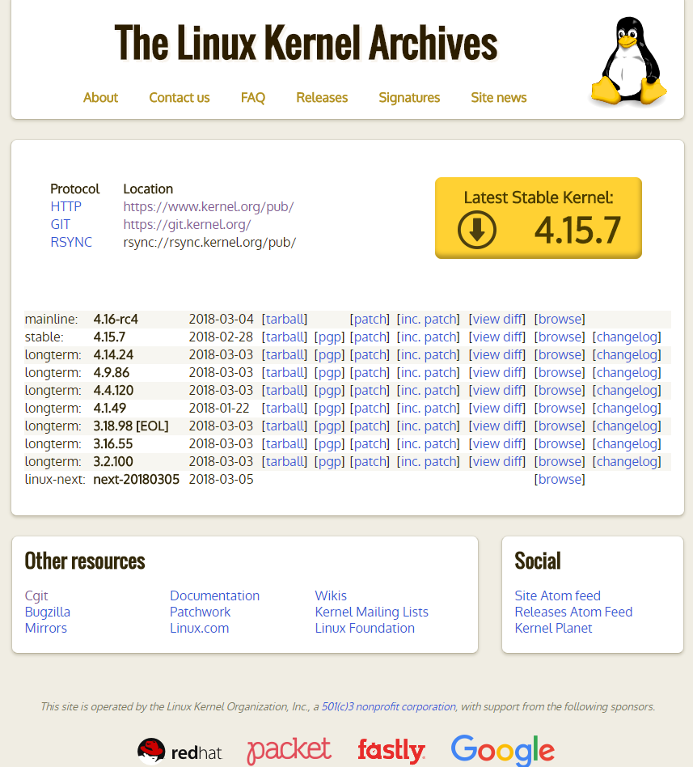
解压源码
进入源码目录输入以下命令解压
1 | tar -xvf linux-4.15.6.tar.gz |
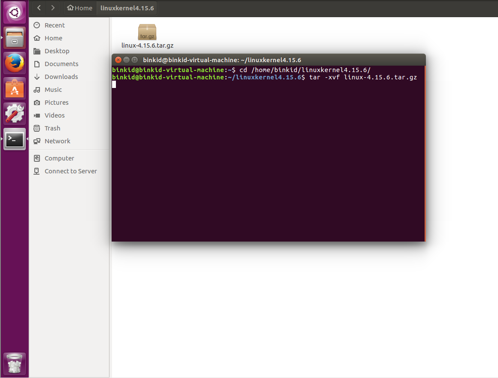
配置内核
清除配置文件和中间文件
进入解压后的目录cd linux-4.15.6,输入make mrproper清除目录下所有配置文件和先前生成核心时产生的中间文件。
make clean与make mrproper区别：
- make clean: remove most generated files but keep the config
- make mrproper: remove all generated files +config+ vaious backup files
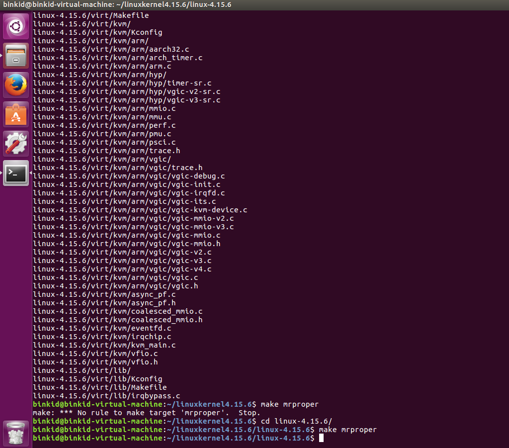
配置内核
以下几种方式可以进行配置：
make config是基于文本的传统配置界面；make menuconfig是基于文本的选单式配置界面，是 是基于文本的选单式配置界面，是最为灵活的内核配置工具 最为灵活的内核配置工具；make xconfig是基于图形窗口模式的配置界面，需要 是基于图形窗口模式的配置界面，需要xWindow 图形环境的支持 图形环境的支持；make oldconfig用于在原来内核配置的基础上作修改。
使用make menuconfig配置内核报错
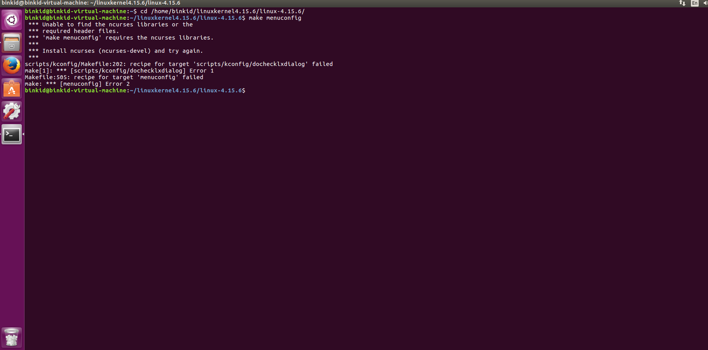
输入sudo apt-get install ncurses-dev 安装ncurses。
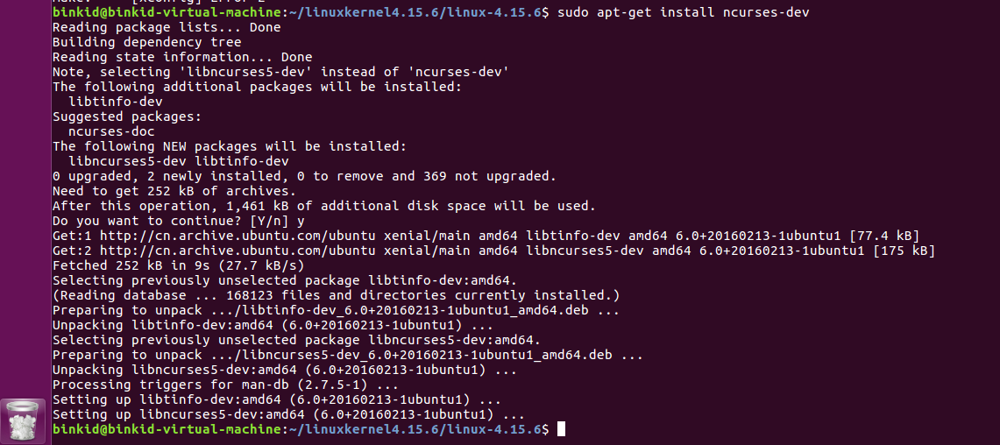
再次输入make menuconfig显示配置界面，采用默认配置，双击Esc退出。
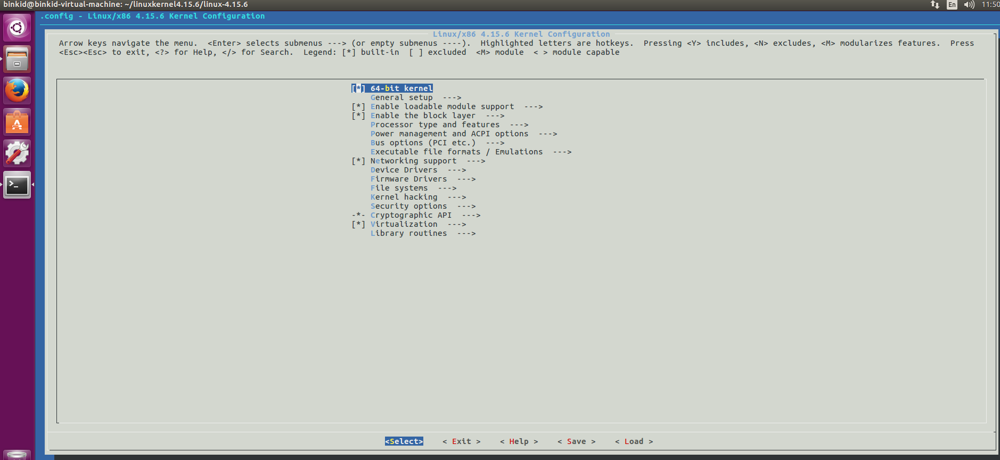
编译内核和模块
编译内核
make生成 生成vmlinux 内核文件;make zImage编译产生压缩形式的内核文件;make bzImage需要内核支持较多的外设和功能时，内核可能变得很大 需要内核支持较多的外设和功能时，内核可能变得很大，此时可以用此命令编译本内核产生压缩率更高的内核文件 ;
本文使用make编译内核
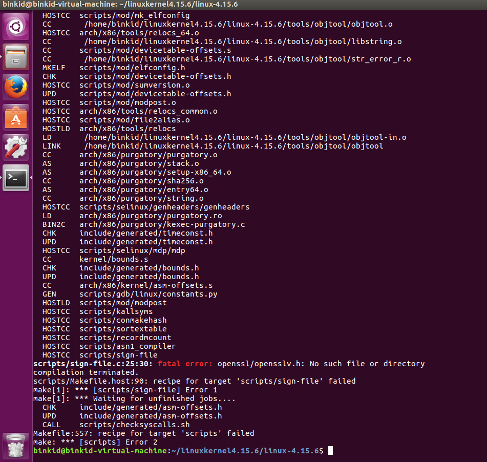
输入sudo apt-get install libssl-dev安装ssl库
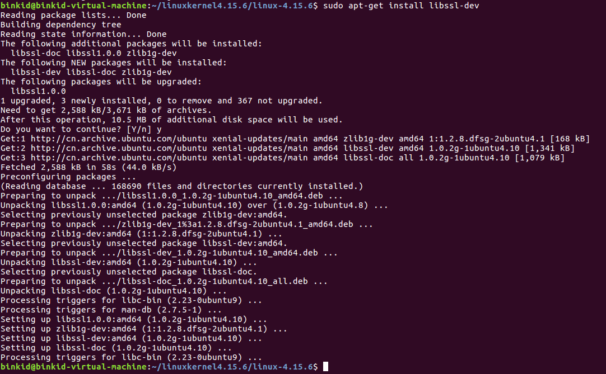
再次make 完成
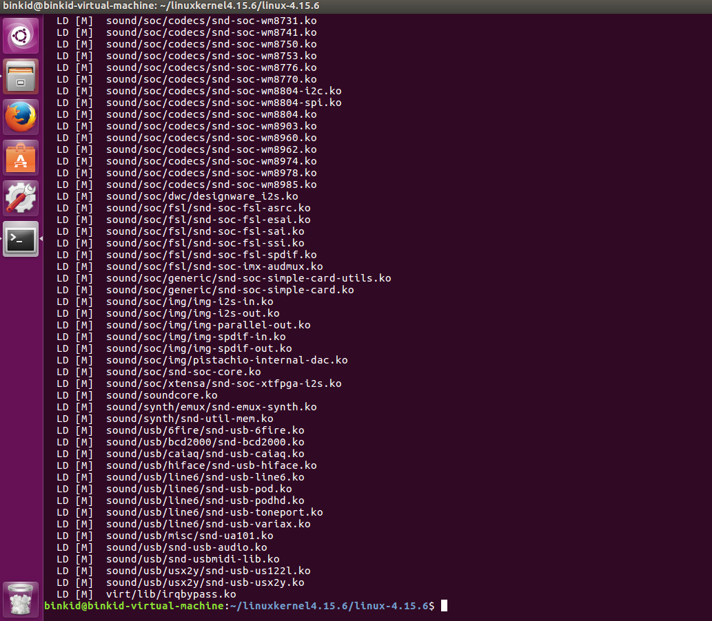
编译安装模块
如果选择了可加载模块，编译完内核后，要对选择的模块进行编译
输入make modules编译模块，make modules_install将模块安装到标准的模块目录中(模块在系统中的标准目录位于/lib/modules/x.y.z，后面的x.y.z 是版本号)
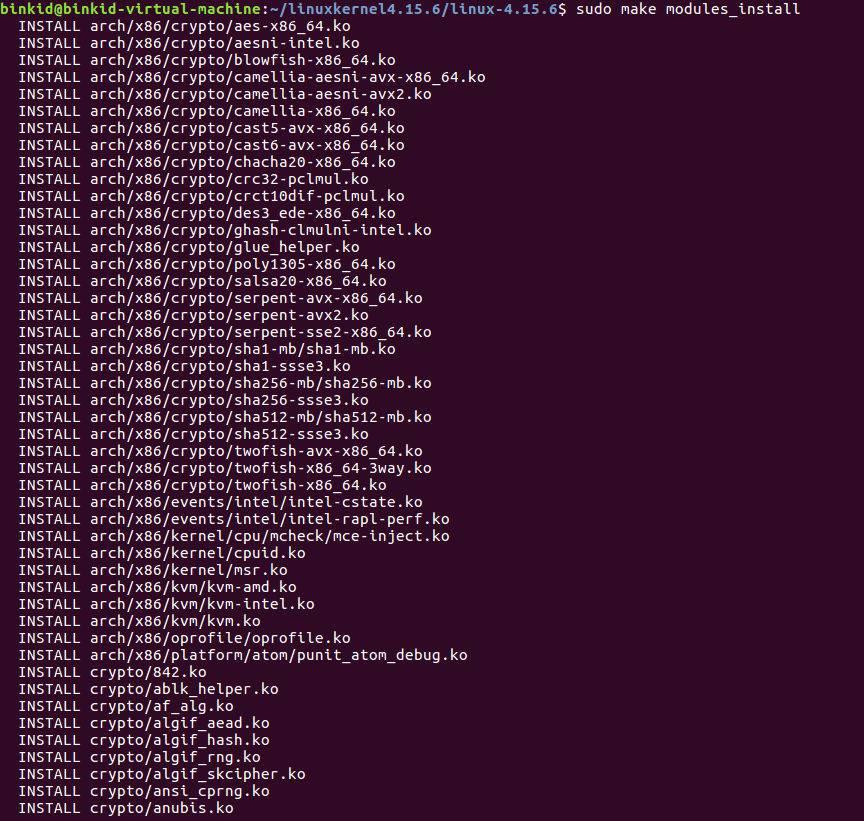
安装内核
输入make install安装内核
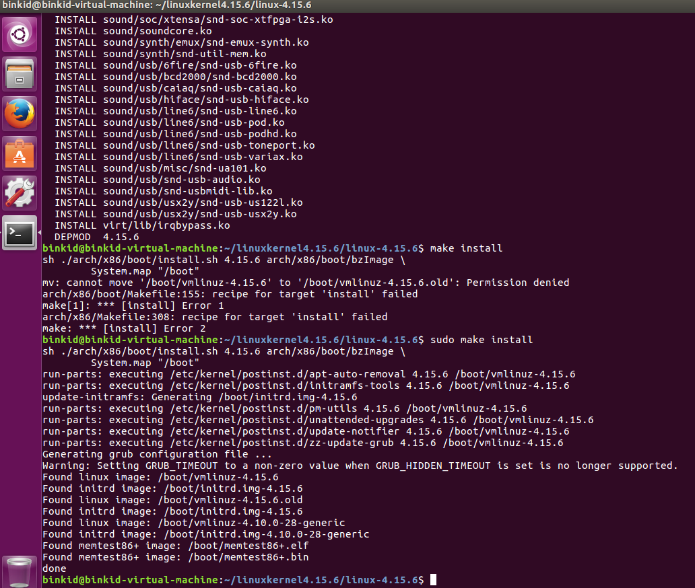
修改grub启动配置文件
修改grub配置显示grub启动菜单
进入目录cd /etc/default/grub修改grub配置文件
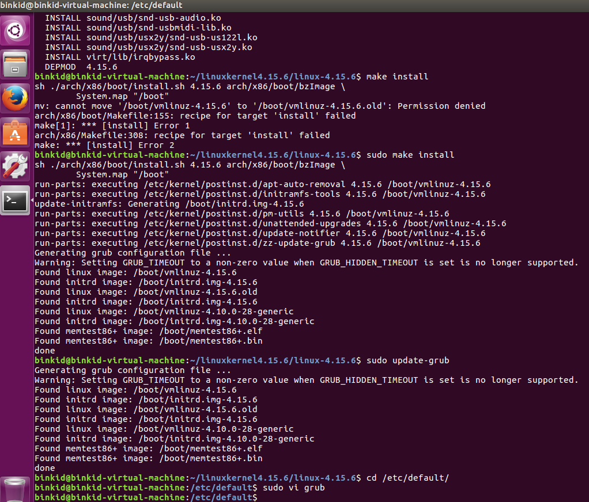
将GRUB_HIDDEN_TIMEOUT=0前加#注释掉,并修改GRUB_TIMEOUT=15
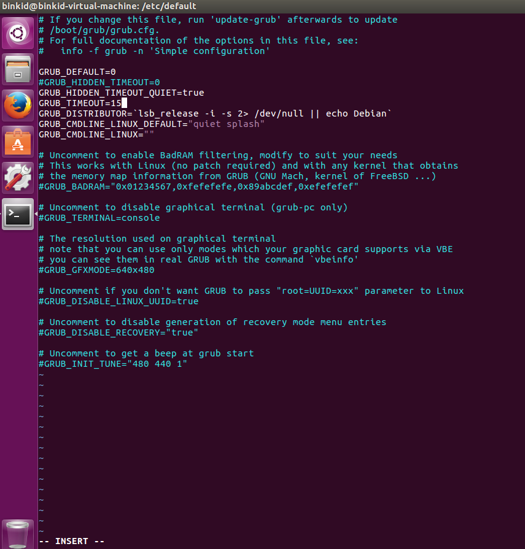
选择新内核启动
在grub菜单选择with Linux 4.15.6内核启动
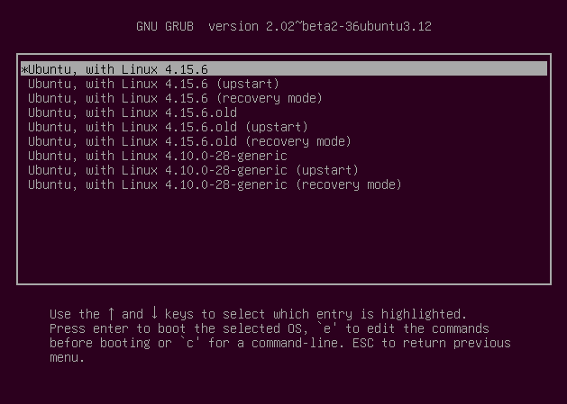
启动后输入uname -r查看内核版本为4.15.6
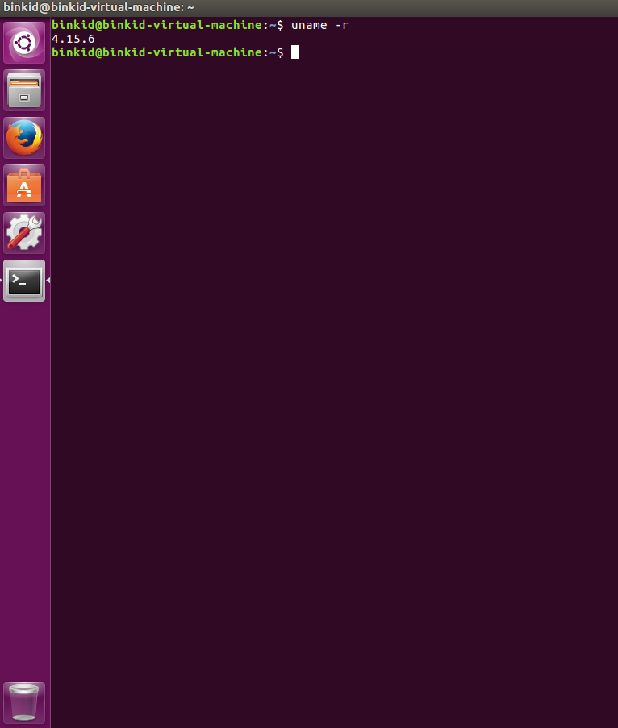